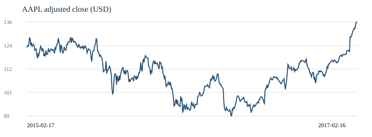

From raw prices to dependable analysis
This workflow retrieves historical adjusted prices, validates dates and positive price values, constructs daily returns and drawdowns, and exports both daily and monthly research tables. It runs automatically in GitHub Actions.
A documented transformation path
Public Plotly finance-charts-apple CSV
Unique dates, nonmissing and positive adjusted prices
Daily returns, peak-to-trough drawdowns and monthly volatility
Reproducible CSV outputs and JSON summary

Risk is more than the final return
The adjusted-price series gained approximately 10.13% from first to last observation while experiencing a roughly 30.44% maximum peak-to-trough decline. Annualized volatility was 24.27% using daily sample standard deviation scaled by √252. These figures emphasize why return-only narratives may conceal drawdown exposure.
Adjusted prices are used as provided; this workflow does not simulate transaction costs, trading strategies, live market data or investor-specific outcomes.